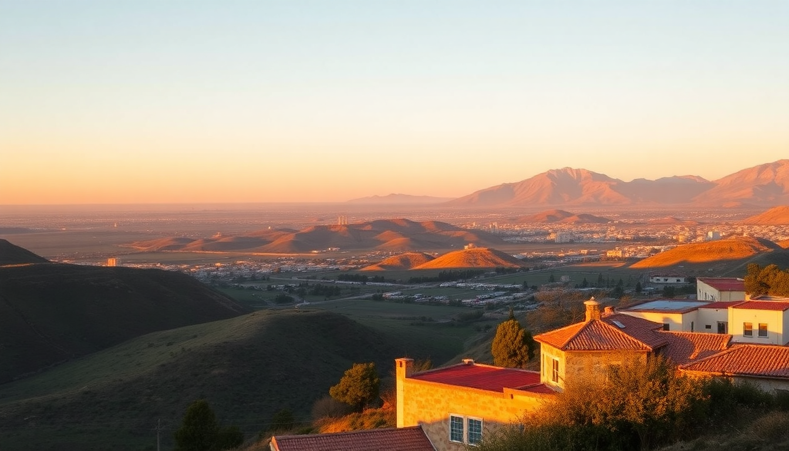

Where to Stay in Arequipa: Best Neighborhoods for Every Budget

I spent two weeks in Arequipa sorting out where to stay, and the city’s layout is simpler than you think. The old center is walkable and packed with colonial architecture, but the hillside districts offer quieter views and better value. Here’s what I learned about picking the right base for your trip.
Which neighborhood is best for first-time visitors?
Centro Histórico is the obvious answer, and for good reason. You’re within walking distance of the Plaza de Armas, the Santa Catalina Monastery, and most of the main museums. The streets are cobblestoned and lively at night, but traffic noise can be an issue on the main avenues.
- Hotel Libertador Arequipa — a converted monastery right on the plaza. Rooms are spacious, but the real draw is the rooftop bar with views of El Misti.
- Casona Solar — a boutique hotel on Calle San Francisco. We stayed in a courtyard room and it was dead quiet despite being two blocks from the action.
- La Posada del Solar — budget option with basic rooms but a killer location three minutes from the cathedral.
I’d recommend Centro Histórico if you have only 2–3 days and want to see the highlights without Uber or taxis. Just avoid rooms facing Calle Mercaderes on Friday nights — the bars stay open late.
Is Yanahuara worth the walk from the center?
Yes, especially if you want better views and fewer crowds. Yanahuara sits on a hillside just west of the historic center — a 15-minute walk uphill or a 5-sol taxi ride. The neighborhood is residential and known for its white volcanic-stone church and mirador overlooking the city and El Misti.
- Mirador de Yanahuara — the viewpoint itself is free and packed with locals at sunset. Grab a queso helado from the cart at the base.
- Arequipa Bed & Breakfast — small guesthouse with three rooms, run by a French-Peruvian couple. They serve homemade bread at breakfast.
- Hostal Las Torres de Yanahuara — mid-range spot with a courtyard garden. The rooms are dated but clean, and the staff helped us book a Colca Canyon tour last-minute.
We moved here after three nights in the center and slept way better. The trade-off is that you’ll need to walk or taxi for dinner options — Yanahuara’s restaurant scene is thin beyond pizzerias and cevicherías.
What about Cayma for longer stays or remote work?
Cayma is the up-and-coming district east of the center, about a 20-minute bus ride from Plaza de Armas. It’s less touristy, more residential, and has a handful of solid coworking spaces and cafes. If you’re staying a week or more, this is where you’ll find better apartment rentals and quieter streets.
- Casa Andina Premium Arequipa — chain hotel but well-run, with a pool and decent WiFi. Good for digital nomads who need reliable internet.
- Selina Arequipa — hostel/hotel hybrid in a restored mansion. The coworking space costs extra but the coffee is strong and the crowd is young.
- Mercado San Camilo — not a hotel, but it’s the best market in the city and a 10-minute walk from Cayma’s main square. Go for the fresh juice and the rocoto relleno.
We stayed in an Airbnb near the Cayma church for a week. The neighborhood felt safe even at night, and we could walk to a supermarket and a gym. The downside: you’ll spend 15–20 minutes commuting to the center each way.
Which area is best for budget travelers?
The area just south of the historic center, around Parque Lambramani and Avenida La Marina, has the cheapest hostels and guesthouses. It’s not picturesque — think concrete buildings and traffic — but you can find dorm beds for under $10 USD and private rooms for $25.
- Wild Rover Hostel — party hostel with a bar and pool. Not for light sleepers, but the social vibe is unmatched.
- Hostal El Puente — basic but clean, with a rooftop that has partial views of the Chili River canyon. No frills.
- Street food on Avenida Ejército — not a place to stay, but this strip has anticuchos (grilled beef heart) for 5 soles and fried chicken spots that locals love.
I’d only recommend this area if you’re on a tight budget and don’t mind noise. If you can stretch an extra $10–15 per night, Yanahuara offers way more charm for the same price range.
What about the area around the train station for day trips?
Arequipa’s Estación de Ferrocarril is near the southern edge of the center, close to the Río Chili. It’s not a neighborhood you’d want to stay in — it’s industrial and dusty — but it’s convenient if you’re taking the train to Puno or Cusco. Most hotels in the center are a 15-minute walk from the station anyway, so don’t base your stay here just for transport.
- PeruRail runs the tourist train to Puno (10 hours) and Cusco (12 hours). We booked through them directly — cheaper than third-party sites.
- Hotel La Casona — a 10-minute walk from the station, with a courtyard and free breakfast. Fine for one night before an early departure.
Save yourself the hassle and stay in Centro Histórico. You’ll be close enough to walk to the station with luggage.
FAQ
Is Arequipa safe at night for solo travelers? Yes, in the main tourist areas. Centro Histórico and Yanahuara are well-lit and have police presence on the plazas. I walked alone from Plaza de Armas to my Airbnb in Yanahuara around 10 p.m. without issues. Avoid the empty side streets near the river after dark, and keep your phone tucked away.
How many days should I stay in Arequipa? Three to four days is enough to see the city and do a Colca Canyon trip. If you’re using Arequipa as a base for trekking or wine tasting in the nearby valleys, plan for five to six days. The altitude (2,335 meters) is manageable for most people, but give yourself the first day to acclimate.
Do I need to book hotels in advance for Arequipa? For the high season (June–August and December–January), yes. We booked a week ahead in July and found decent options, but the best budget rooms were gone. Shoulder months (April–May, September–October) you can usually walk in and negotiate a rate, especially in Yanahuara.
Conclusion
- Centro Histórico is your best bet for a short visit — stay at Hotel Libertador Arequipa or Casona Solar for location and quiet.
- Yanahuara offers better views and sleep quality for mid-range budgets, especially at Arequipa Bed & Breakfast.
- Cayma works for longer stays or remote work, with Casa Andina Premium as a solid chain option.
- Budget travelers should head to Parque Lambramani but expect noise and less charm.
- Skip the train station area for lodging — it’s not worth the convenience.